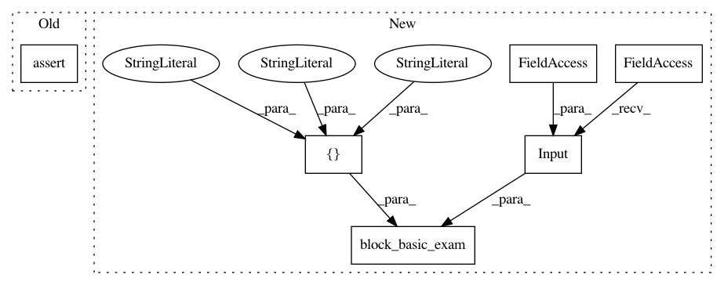

2e3ecf5ad4817912b14f8e17625aaa24185081c6,tests/autokeras/hypermodels/basic_test.py,,test_xception_block,#Any#Any#,37
Before Change
block = graph_module.deserialize(graph_module.serialize(block))
block.build(hp, ak.Input(shape=input_shape).build())
assert utils.name_in_hps("activation", hp)
assert utils.name_in_hps("initial_strides", hp)
assert utils.name_in_hps("num_residual_blocks", hp)
assert utils.name_in_hps("pooling", hp)
assert init.called
After Change
@mock.patch("autokeras.hypermodels.basic.xception.HyperXception.__init__")
@mock.patch("autokeras.hypermodels.basic.xception.HyperXception.build")
def test_xception_block(init, build):
utils.block_basic_exam(
basic.XceptionBlock(),
tf.keras.Input(shape=(32, 32, 3), dtype=tf.float32),
[
"activation",
"initial_strides",
"num_residual_blocks",
"pooling",
])
assert init.called
assert build.called
In pattern: SUPERPATTERN
Frequency: 4
Non-data size: 6
Instances
Project Name: keras-team/autokeras
Commit Name: 2e3ecf5ad4817912b14f8e17625aaa24185081c6
Time: 2020-05-20
Author: jin@tamu.edu
File Name: tests/autokeras/hypermodels/basic_test.py
Class Name:
Method Name: test_xception_block
Project Name: keras-team/autokeras
Commit Name: 2e3ecf5ad4817912b14f8e17625aaa24185081c6
Time: 2020-05-20
Author: jin@tamu.edu
File Name: tests/autokeras/hypermodels/wrapper_test.py
Class Name:
Method Name: test_image_block
Project Name: keras-team/autokeras
Commit Name: 2e3ecf5ad4817912b14f8e17625aaa24185081c6
Time: 2020-05-20
Author: jin@tamu.edu
File Name: tests/autokeras/hypermodels/basic_test.py
Class Name:
Method Name: test_rnn_block
Project Name: keras-team/autokeras
Commit Name: 2e3ecf5ad4817912b14f8e17625aaa24185081c6
Time: 2020-05-20
Author: jin@tamu.edu
File Name: tests/autokeras/hypermodels/basic_test.py
Class Name:
Method Name: test_conv_block